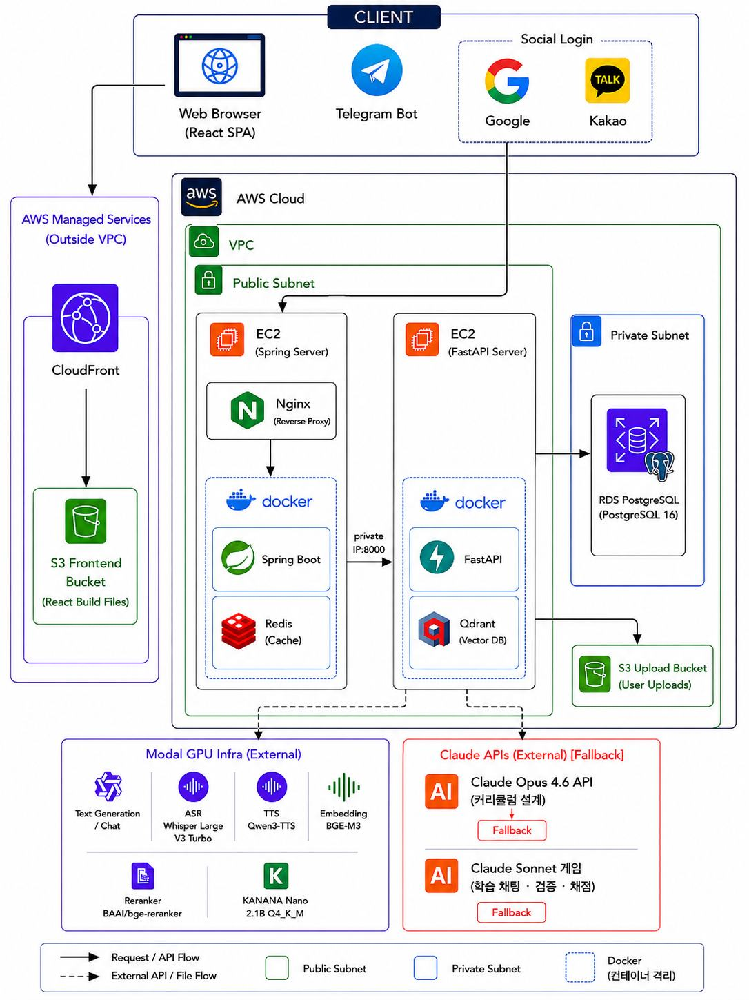

Portfolio
설계와 AI 서버를 맡은
일과 · ilgwa
주제를 넣으면 강의, 슬라이드, 음성 수업, 시험, 노트가 나옵니다.
Portfolio
주제를 넣으면 강의, 슬라이드, 음성 수업, 시험, 노트가 나옵니다.
GitHub algocean1204/SW-ilgwa
AI 서버 FastAPI, LangGraph, vLLM, Modal GPU
모델 Qwen3.6-27B, Qwen3-TTS, Qwen3-ASR
검색 Qdrant, BGE-M3, Marker, MinerU
설계 · FastAPI AI 파이프라인
생성 시간과 교재 근거가 빠지면 강의가 성립하지 않습니다. 그 두 가지를 서버에서 잡았습니다.
한 장씩 뽑던 강의를 배치·병렬로 바꿨습니다.
모델이 뼈대까지 정하면 강의마다 레이아웃이 갈립니다.
인증·결제와 AI 런타임의 수명이 다릅니다.
주제 입력 → 강의 · 슬라이드 · 음성 · 시험 · 노트

한 장씩 순차 호출하면 강의 하나 만드는 데 462초가 걸렸습니다. 배치와 병렬로 바꿨습니다.
문제 1
문제 상황
슬라이드 한 장을 한 호출로 뽑고, 퀴즈·노트·과제·대본도 그 뒤에 이어서 돌렸습니다.
원인
영향
강의 하나를 준비하는 동안 다음 챕터를 못 넣습니다.
문제 2
문제 상황
모델을 그때그때 올리면 첫 토큰 전에 12.4초가 붙었습니다.
원인
영향
첫 강의가 체감으로 멈춘 것처럼 보입니다.
한 일
| 항목 | 이전 | 이후 |
|---|---|---|
| 강의 생성 | 462s | 120s |
| 초기 콜드 스타트 | 12.4s | — |
| 모델 사전 로드 | — | 0.8s |
숫자는 프로젝트에서 재 둔 값입니다. 클라우드 API는 이 경로의 주 엔진이 아닙니다.
생성 때마다 PDF를 모델에 넣으면 느리고, 스캔·수식 페이지에서 근거가 빠집니다.
문제 1
문제 상황
강의·시험 프롬프트에 책 전체를 실으면 토큰과 시간이 같이 늘어납니다.
원인
관련 문단만 고르는 인덱스가 없습니다.
문제 2
문제 상황
텍스트 레이어가 있는 페이지와 스캔 페이지가 한 파일에 섞입니다.
원인
실패한 페이지를 그대로 임베딩하면 검색이 엉뚱한 문단을 가져옵니다.
한 일
강의 생성은 이 인덱스를 조회합니다. 시험·노트도 같은 문단을 근거로 씁니다.
모델이 HTML 뼈대까지 만들면 같은 과목인데도 강의마다 레이아웃이 달라집니다.
문제
문제 상황
요청마다 제목 크기, 코드 블록, 여백이 바뀌었습니다.
원인
모델에게 슬라이드 전체를 맡기면 형식 제약보다 문장 생성이 이깁니다.
영향
16종 강의 템플릿을 써도 화면에서 같은 제품으로 안 보입니다.
한 일
결정
{{빈칸}}만 채움예
{
"category": "code",
"title": "{{핵심_개념}}",
"narration": "{{설명_200~360자}}"
}
시험 쪽
출제도 같은 방식입니다. 유형을 계획한 뒤 문항을 만들고, 교차 검증에서 걸리면 교정합니다. 교정이 안 되면 해당 문항만 다시 뽑습니다.
양산은 Modal GPU입니다. GPU가 죽으면 생성이 전부 멈춥니다. 음성은 텍스트 모델과 다른 호출입니다.
문제
문제 상황
주 엔진을 GPU 한 줄에만 두면 그 줄이 실패하는 순간 파이프라인이 멈춥니다.
한 일
폴백은 양산을 대체하려고 둔 것이 아닙니다. GPU가 죽었을 때 빈 화면을 안 주려고 둔 줄입니다.
음성
흐름
인식
학생 음성 질문은 Qwen3-ASR이 텍스트로 바꿉니다.
서버 경계
LangGraph, OCR, 임베딩, GPU 호출을 Java 한 프로세스에 넣지 않으려고 Python 서버를 추가했습니다. 인증·결제·DB 트랜잭션은 Spring에 남겼습니다.
학습 요청은 Spring이 권한과 상태를 만든 뒤 FastAPI 생성 파이프라인이 이어받습니다. 채점 결과만 Spring으로 콜백합니다.
LangGraph로 분기만 그래프에 올렸습니다. 아래는 큰 노드입니다.
슬라이드·퀴즈·노트·과제는 같이 만들고, 음성만 슬라이드 대본 이후입니다.
퀴즈
슬라이드 플랜 → 생성 → 품질 보강 → 정답 위치 균등 → 검증 → 저장
노트
생성 → 마크다운으로 포매팅 → 저장
과제
슬라이드 플랜 → 생성 → 저장. 채점은 생성 그래프 밖, Spring 콜백
| 항목 | 값 |
|---|---|
| 강의 생성 (순차) | 462s |
| 강의 생성 (병렬) | 120s |
| 초기 콜드 스타트 | 12.4s |
| 모델 사전 로드 | 0.8s |
데모 https://algocean1204.github.io/SW-ilgwa/ · 레포 https://github.com/algocean1204/SW-ilgwa